微信文本消息静态表情转义对照表
| 编号 | 转义值 | 描述 | 实际效果 |
|---|
| 1 | [微笑] | 微笑 |  |
| 2 | [撇嘴] | 撇嘴 |  |
| 3 | [色] | 色 |  |
| 4 | [发呆] | 发呆 |  |
| 5 | [得意] | 得意 |  |
| 6 | [流泪] | 流泪 |  |
| 7 | [害羞] | 害羞 |  |
| 8 | [闭嘴] | 闭嘴 |  |
| 9 | [睡] | 睡 |  |
| 10 | [大哭] | 大哭 |  |
| 11 | [尴尬] | 尴尬 |  |
| 12 | [发怒] | 发怒 |  |
| 13 | [调皮] | 调皮 |  |
| 14 | [呲牙] | 呲牙 |  |
| 15 | [惊讶] | 惊讶 |  |
| 16 | [难过] | 难过 |  |
| 17 | [酷] | 酷 |  |
| 18 | [��] | �� |  |
| 19 | [抓狂] | 抓狂 |  |
| 20 | [吐] | 吐 |  |
| 21 | [偷笑] | 偷笑 |  |
| 22 | [愉快] | 愉快 |  |
| 23 | [白眼] | 白眼 |  |
| 24 | [傲慢] | 傲慢 |  |
| 25 | [饥饿] | 饥饿 |  |
| 26 | [困] | 困 |  |
| 27 | [惊恐] | 惊恐 |  |
| 28 | [流汗] | 流汗 |  |
| 29 | [憨笑] | 憨笑 |  |
| 30 | [悠闲] | 悠闲 |  |
| 31 | [奋斗] | 奋斗 |  |
| 32 | [咒骂] | 咒骂 |  |
| 33 | [疑问] | 疑问 |  |
| 34 | [嘘] | 嘘 |  |
| 35 | [晕] | 晕 |  |
| 36 | [疯了] | 疯了 |  |
| 37 | [衰] | 衰 |  |
| 38 | [骷髅] | 骷髅 |  |
| 39 | [敲打] | 敲打 |  |
| 40 | [再见] | 再见 |  |
| 41 | [擦汗] | 擦汗 |  |
| 42 | [抠鼻] | 抠鼻 |  |
| 43 | [鼓掌] | 鼓掌 |  |
| 44 | [糗大了] | 糗大了 |  |
| 45 | [坏笑] | 坏笑 |  |
| 46 | [左哼哼] | 左哼哼 |  |
| 47 | [右哼哼] | 右哼哼 |  |
| 48 | [哈欠] | 哈欠 |  |
| 49 | [鄙视] | 鄙视 |  |
| 50 | [委屈] | 委屈 |  |
| 51 | [快哭了] | 快哭了 |  |
| 52 | [阴险] | 阴险 |  |
| 53 | [亲亲] | 亲亲 |  |
| 54 | [吓] | 吓 |  |
| 55 | [可怜] | 可怜 |  |
| 56 | [菜刀] | 菜刀 |  |
| 57 | [西瓜] | 西瓜 |  |
| 58 | [啤酒] | 啤酒 |  |
| 59 | [篮球] | 篮球 |  |
| 60 | [乒乓] | 乒乓 |  |
| 61 | [咖啡] | 咖啡 |  |
| 62 | [饭] | 饭 |  |
| 63 | [猪头] | 猪头 |  |
| 64 | [玫瑰] | 玫瑰 |  |
| 65 | [凋谢] | 凋谢 |  |
| 66 | [嘴唇] | 嘴唇 |  |
| 67 | [爱心] | 爱心 |  |
| 68 | [心碎] | 心碎 |  |
| 69 | [蛋糕] | 蛋糕 |  |
| 70 | [闪电] | 闪电 |  |
| 71 | [炸弹] | 炸弹 |  |
| 72 | [刀] | 刀 |  |
| 73 | [足球] | 足球 |  |
| 74 | [瓢虫] | 瓢虫 |  |
| 75 | [便便] | 便便 |  |
| 76 | [月亮] | 月亮 |  |
| 77 | [太阳] | 太阳 |  |
| 78 | [礼物] | 礼物 |  |
| 79 | [拥抱] | 拥抱 |  |
| 80 | [强] | 强 |  |
| 81 | [弱] | 弱 |  |
| 82 | [握手] | 握手 |  |
| 83 | [胜利] | 胜利 |  |
| 84 | [抱拳] | 抱拳 |  |
| 85 | [勾引] | 勾引 |  |
| 86 | [拳头] | 拳头 |  |
| 87 | [差劲] | 差劲 |  |
| 88 | [爱你] | 爱你 |  |
| 89 | [NO] | NO |  |
| 90 | [OK] | OK |  |
| 91 | [爱情] | 爱情 |  |
| 92 | [飞吻] | 飞吻 |  |
| 93 | [跳跳] | 跳跳 |  |
| 94 | [发抖] | 发抖 |  |
| 95 | [怄火] | 怄火 |  |
| 96 | [转圈] | 转圈 |  |
| 97 | [磕头] | 磕头 |  |
| 98 | [回头] | 回头 |  |
| 99 | [跳绳] | 跳绳 |  |
| 100 | [投降] | 投降 |  |
| 101 | [激动] | 激动 |  |
| 102 | [乱舞] | 乱舞 |  |
| 103 | [献吻] | 献吻 |  |
| 104 | [左太极] | 左太极 |  |
| 105 | [右太极] | 右太极 |  |
| 106 | [嘿哈] | 嘿哈 | |
| 107 | [捂脸] | 捂脸 | 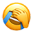 |
| 108 | [奸笑] | 奸笑 | |
| 109 | [机智] | 机智 | 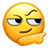 |
| 110 | [皱眉] | 皱眉 |  |
| 111 | [耶] | 耶 | |
| 112 | [红包] | 红包 | |
| 113 | [蜡烛] | 蜡烛 | |
| 114 | \uE415 | 笑脸 | |
| 115 | \uE056 | 开心 | |
| 116 | \uE057 | 大笑 | |
| 117 | \uE414 | 热情 | |
| 118 | \uE405 | 眨眼 | |
| 119 | \uE106 | 色 | |
| 120 | \uE418 | 接吻 | |
| 121 | \uE417 | 亲吻 | |
| 122 | \uE40D | 脸红 | |
| 123 | \uE404 | 漏齿笑 | |
| 124 | \uE40A | 满意 | |
| 125 | \uE105 | 戏弄 | |
| 126 | \uE409 | 吐舌 | |
| 127 | \uE40E | 无语 | |
| 128 | \uE402 | 得意 |  |
| 129 | \uE108 | 汗 | |
| 130 | \uE403 | 失望 | |
| 131 | \uE058 | 低落 |  |
| 132 | \uE407 | 呸 | |
| 133 | \uE401 | 焦虑 | |
| 134 | \uE40F | 担心 | |
| 135 | \uE40B | 震惊 | |
| 136 | \uE406 | 悔恨 | |
| 137 | \uE413 | 眼泪 | |
| 138 | \uE411 | 哭 | |
| 139 | \uE412 | 破涕为笑 | |
| 140 | \uE410 | 晕 | |
| 141 | \uE107 | 恐惧 | |
| 142 | \uE059 | 心烦 | |
| 143 | \uE416 | 生气 | |
| 144 | \uE408 | 睡觉 | |
| 145 | \uE40C | 生病 | |
| 146 | \uE11A | 恶魔 | |
| 147 | \uE10C | 外星人 | |
| 148 | \uE022 | 心 | |
| 149 | \uE023 | 心碎 | |
| 150 | \uE329 | 丘比特 | |
| 151 | \uE32E | 闪烁 | 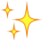 |
| 152 | \uE335 | 星星 | |
| 153 | \uE337 | 叹号 | |
| 154 | \uE336 | 问号 | |
| 155 | \uE13C | 睡着 | |
| 156 | \uE331 | 水滴 | 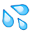 |
| 157 | \uE03E | 音乐 | |
| 158 | \uE11D | 火 | |
| 159 | \uE05A | 便便 | |
| 160 | \uE00E | 强 | |
| 161 | \uE421 | 弱 | 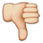 |
| 162 | \uE00D | 拳头 | |
| 163 | \uE011 | 胜利 | |
| 164 | \uE22E | 上 | 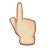 |
| 165 | \uE22F | 下 | 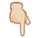 |
| 166 | \uE231 | 右 | 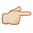 |
| 167 | \uE230 | 左 | 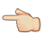 |
| 168 | \uE00F | 第一 | 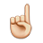 |
| 169 | \uE14C | 强壮 | |
| 170 | \uE111 | 吻 |  |
| 171 | \uE425 | 热恋 | |
| 172 | \uE001 | 男孩 | |
| 173 | \uE002 | 女孩 |  |
| 174 | \uE005 | 女士 | |
| 175 | \uE004 | 男士 |  |
| 176 | \uE04E | 天使 |  |
| 177 | \uE11C | 骷髅 | |
| 178 | \uE003 | 红唇 | |
| 179 | \uE04A | 太阳 | |
| 180 | \uE04B | 下雨 | 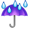 |
| 181 | \uE049 | 多云 | |
| 182 | \uE048 | 雪人 | 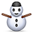 |
| 183 | \uE04C | 月亮 | |
| 184 | \uE13D | 闪电 | |
| 185 | \uE43E | 海浪 | |
| 186 | \uE04F | 猫 | 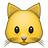 |
| 187 | \uE052 | 小狗 | |
| 188 | \uE053 | 老鼠 | 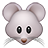 |
| 189 | \uE524 | 仓鼠 | 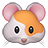 |
| 190 | \uE52C | 兔子 | 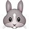 |
| 191 | \uE52A | 狗 | 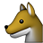 |
| 192 | \uE531 | 青蛙 | |
| 193 | \uE050 | 老虎 | 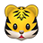 |
| 194 | \uE527 | 考拉 | |
| 195 | \uE051 | 熊 | |
| 196 | \uE10B | 猪 | 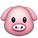 |
| 197 | \uE52B | 牛 | 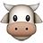 |
| 198 | \uE52F | 野猪 | 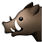 |
| 199 | \uE109 | 猴子 | |
| 200 | \uE01A | 马 | 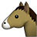 |
| 201 | \uE52D | 蛇 | 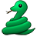 |
| 202 | \uE521 | 鸽子 | 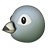 |
| 203 | \uE52E | 鸡 | 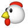 |
| 204 | \uE055 | 企鹅 | 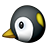 |
| 205 | \uE525 | 毛虫 | |
| 206 | \uE10A | 章鱼 | 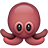 |
| 207 | \uE522 | 鱼 | |
| 208 | \uE054 | 鲸鱼 | |
| 209 | \uE520 | 海豚 | 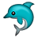 |
| 210 | \uE032 | 玫瑰 | |
| 211 | \uE303 | 花 | |
| 212 | \uE307 | 棕桐树 | |
| 213 | \uE308 | 仙人掌 |  |
| 214 | \uE437 | 礼盒 | |
| 215 | \uE445 | 南瓜灯 | |
| 216 | \uE11B | 鬼魂 | |
| 217 | \uE448 | 圣诞老人 | |
| 218 | \uE033 | 圣诞树 | |
| 219 | \uE112 | 礼物 | |
| 220 | \uE325 | 铃 | |
| 221 | \uE312 | 庆祝 | |
| 222 | \uE310 | 气球 | |
| 223 | \uE126 | CD | |
| 224 | \uE008 | 相机 | |
| 225 | \uE03D | 录像机 | |
| 226 | \uE00C | 电脑 | |
| 227 | \uE12A | 电视 | |
| 228 | \uE009 | 电话 | |
| 229 | \uE145 | 解锁 | |
| 230 | \uE144 | 锁 | |
| 231 | \uE03F | 钥匙 | |
| 232 | \uE03F | 成交 | |
| 233 | \uE10F | 灯泡 | |
| 234 | \uE101 | 邮箱 | |
| 235 | \uE13F | 浴缸 | 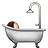 |
| 236 | \uE12F | 钱 | |
| 237 | \uE311 | 炸弹 | 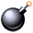 |
| 238 | \uE113 | 手枪 | |
| 239 | \uE30F | 药丸 | |
| 240 | \uE42B | 橄榄球 | |
| 241 | \uE42A | 篮球 | |
| 242 | \uE018 | 足球 | |
| 243 | \uE016 | 棒球 |  |
| 244 | \uE014 | 高尔夫 | |
| 245 | \uE131 | 奖杯 | |
| 246 | \uE12B | 入侵者 | 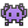 |
| 247 | \uE03C | 唱歌 | |
| 248 | \uE041 | 吉他 | |
| 249 | \uE322 | 比基尼 | |
| 250 | \uE10E | 皇冠 | |
| 251 | \uE43C | 雨伞 | |
| 252 | \uE323 | 手提包 | |
| 253 | \uE31C | 口红 | 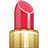 |
| 254 | \uE034 | 戒指 | 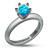 |
| 255 | \uE035 | 钻石 | |
| 256 | \uE045 | 咖啡 | |
| 257 | \uE047 | 啤酒 | |
| 258 | \uE30C | 干杯 | |
| 259 | \uE044 | 鸡尾酒 | |
| 260 | \uE120 | 汉堡 | 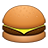 |
| 261 | \uE33B | 薯条 | 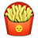 |
| 262 | \uE33F | 意面 | 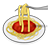 |
| 263 | \uE344 | 寿司 | 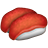 |
| 264 | \uE340 | 面条 | 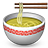 |
| 265 | \uE147 | 煎蛋 | |
| 266 | \uE33A | 冰激凌 | |
| 267 | \uE34B | 蛋糕 | 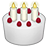 |
| 268 | \uE345 | 苹果 | 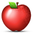 |
| 269 | \uE01D | 飞机 | |
| 270 | \uE10D | 火箭 | |
| 271 | \uE136 | 自行车 |  |
| 272 | \uE435 | 高铁 | |
| 273 | \uE252 | 警告 | |
| 274 | \uE132 | 旗 | |
| 275 | \uE138 | 男人 | |
| 276 | \uE139 | 女人 | |
| 277 | \uE332 | O | |
| 278 | \uE333 | X | |
| 279 | \uE24E | 版权 | |
| 280 | \uE24F | 注册商标 | |
| 281 | \uE537 | 商标 | |